In-Class_Ex06b: Time Series with Tableau
1 Introduction
In this in-class exercise, we will learn how to use Tableau to create Line Plots and Cycle Plots, deploy them on a dashboard, before publishing them on Tableau Public.
You can access the published Tableau site here.
2 Creating Line Plots
Using the data source “arrivals_by_air.xls”, we will first plot the year by sum arrivals.
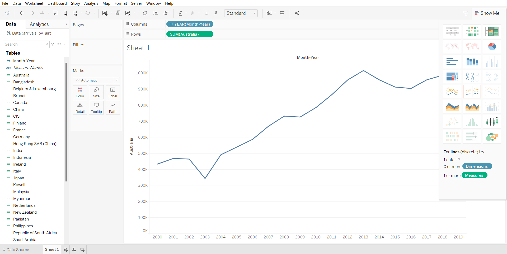
From the output above, we can see that it is not very convenient for the user, because you will need need to add/ remove the countries individually. Thus, it will be better if we can change the user interface. To do that, we will be editing the data to a pivot table. First, we will go to Data Source, and select all countries.
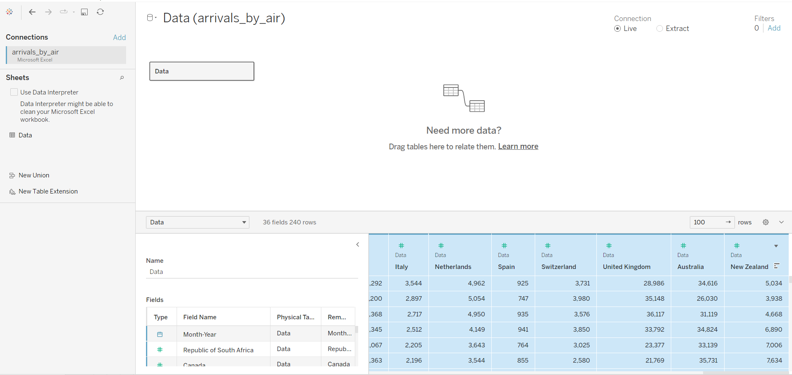
After that, hover the cursor to the last column, click on the black triangle and select “Pivot”.
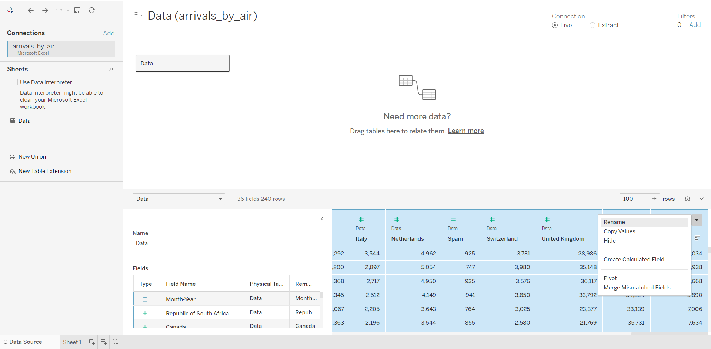
After which, we can now see that the data source has been changed to a pivot table, comprising three columns: Date, Country, Arrivals. We will rename the columns accordingly.
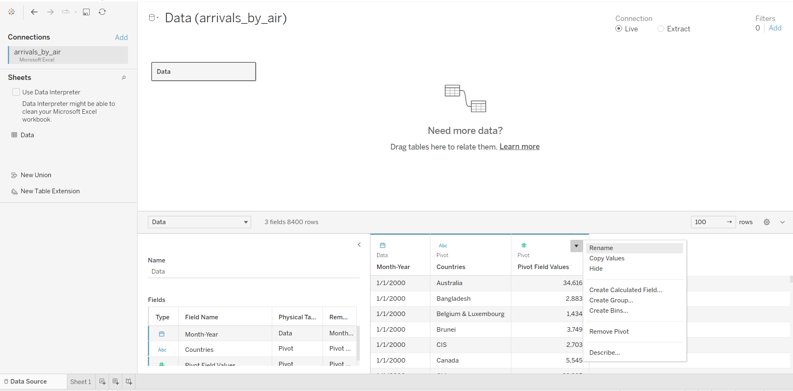
From the sheet, we can see that there is low variability, which is not very useful.
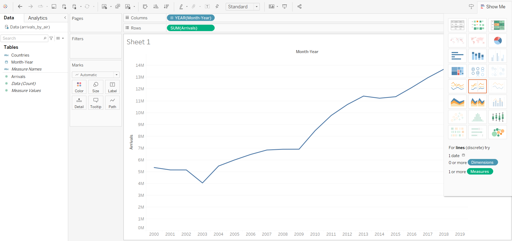
We will now increase the variability, by changing the Year to Month. We will also add a filter to the line graph:
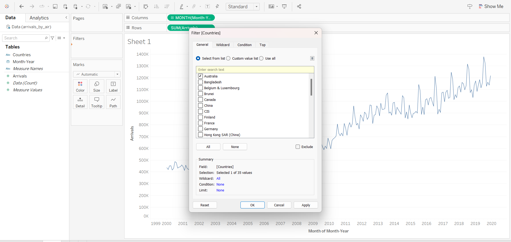
Notice that the filter is not exposed to the user. We will now display the filter interface:
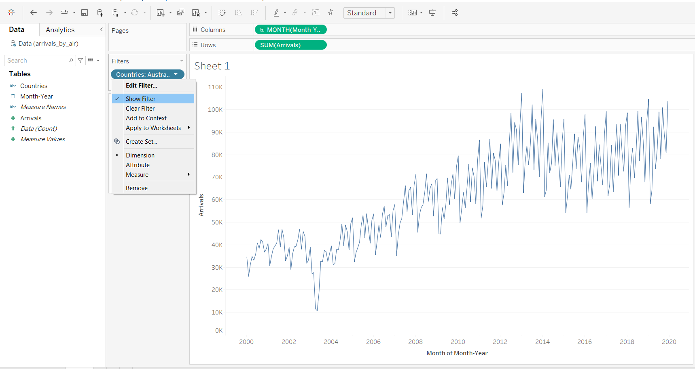
Although there is a filter interface, the user will need to de-select the previous country when he wants to select a new country to visualise the data. Thus, we will improve user interface by selecting single value (list).
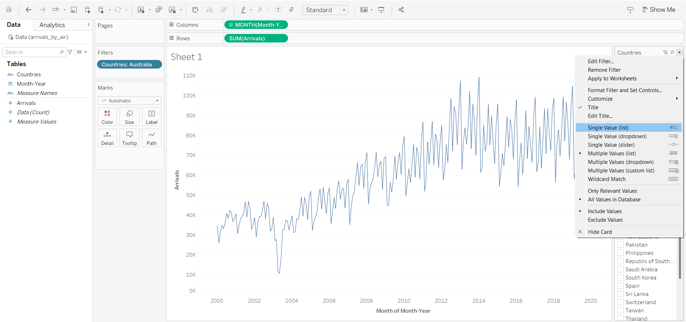
3 Creating Cycle Plot
First, we will duplicate the Line Graph sheet, and rename it as Cycle Plot.
In the column, we will change to Month, and add another Year.
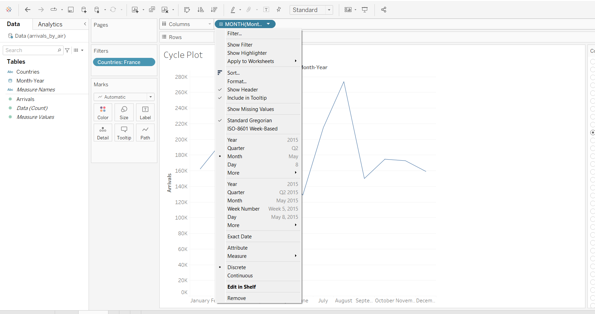
As the output is beyond the display window, we will select “Fit Width”.
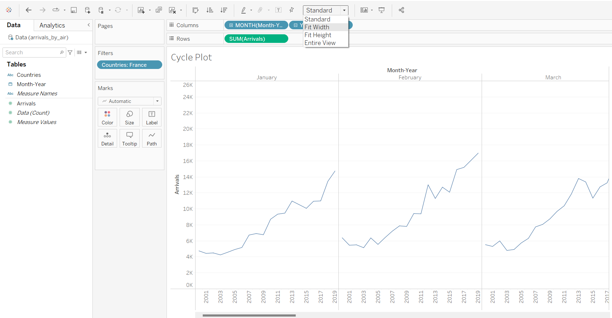
We will also add a reference line.
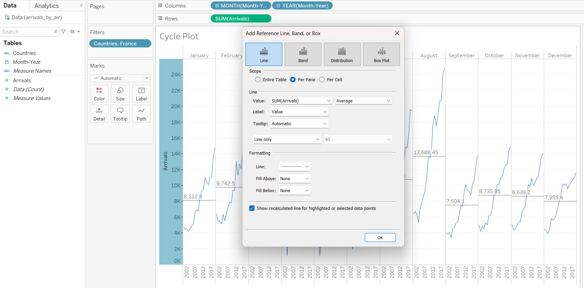
4 Creating Dashboard
After creating a new dashboard, we will first select “Automatic” for size, so that users can view the dashboard from both computers and mobile phones.
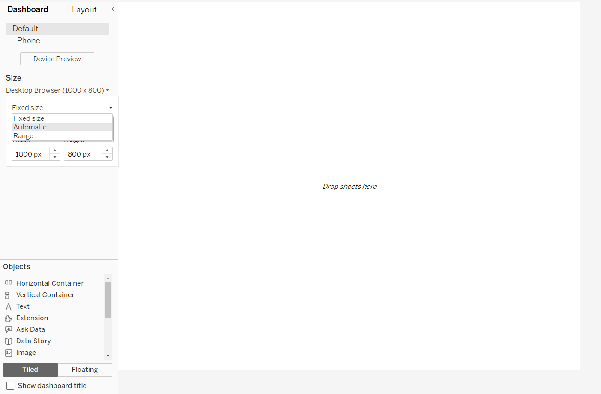
After selecting both Line Graph and Cycle Plot, we notice that there are now two legends, which is not ideal.
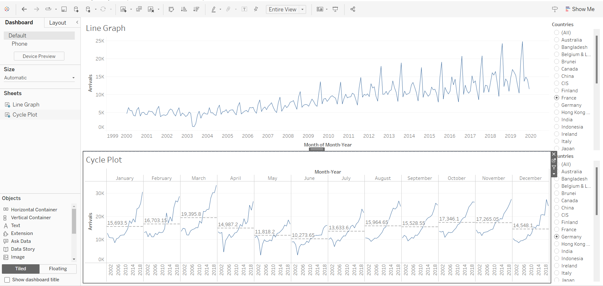
In order to create one legend for both charts, we will first go back to the Line Graph Sheet. We will edit filter and select “All using this Data Source”.
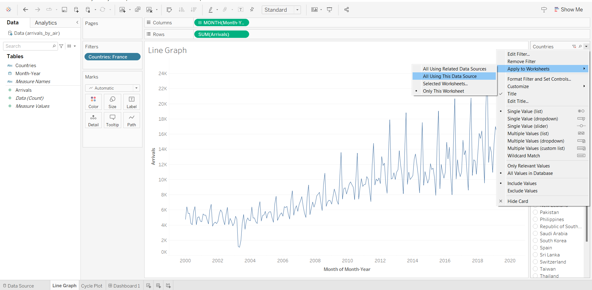
Going back to the dashboard, we will remove the extra filter from the Cycle Plot.
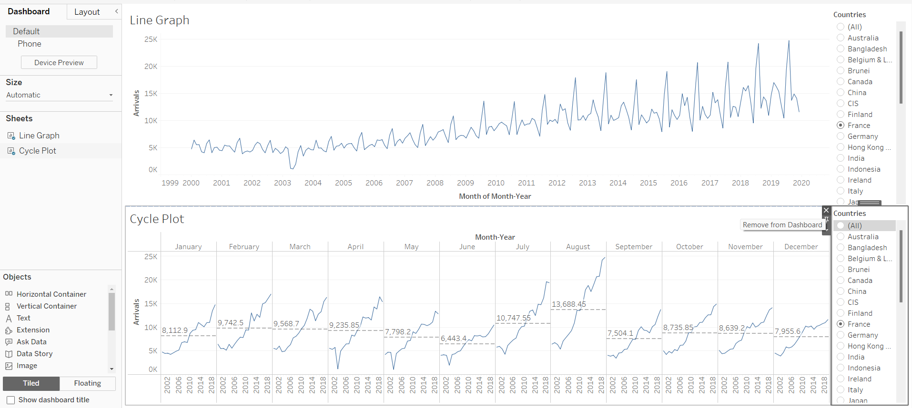
5 Publishing to Tableau Public
Extract data
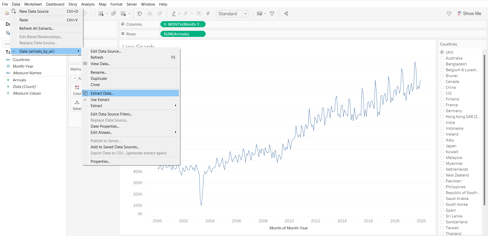
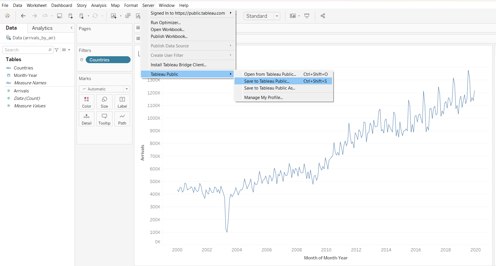
6 Creating Heat Map
Import data from “event_log.csv”
Use dimensions data
column
choose month
choose week number
row
- weekday
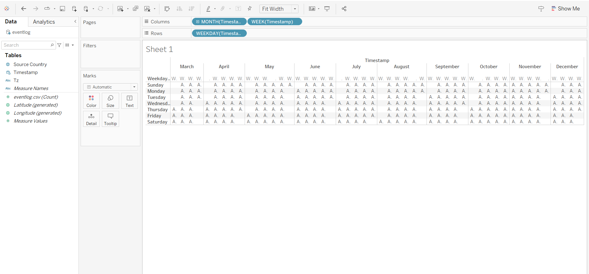
new field
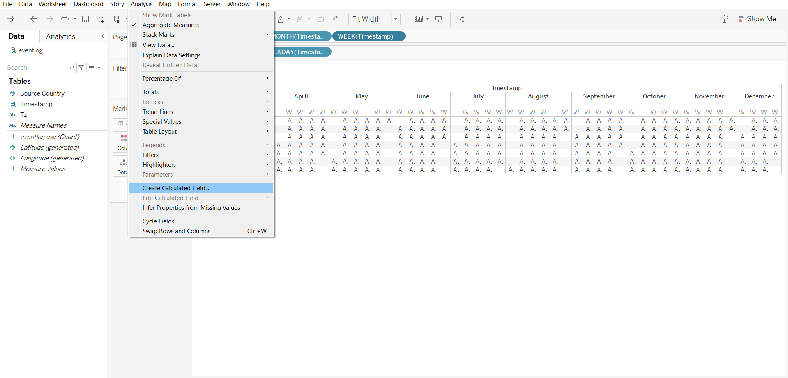
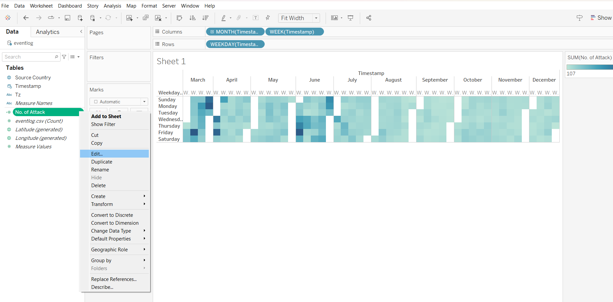
notice that there are white columns in the output, as the months are not fused together.
adding filter by zones
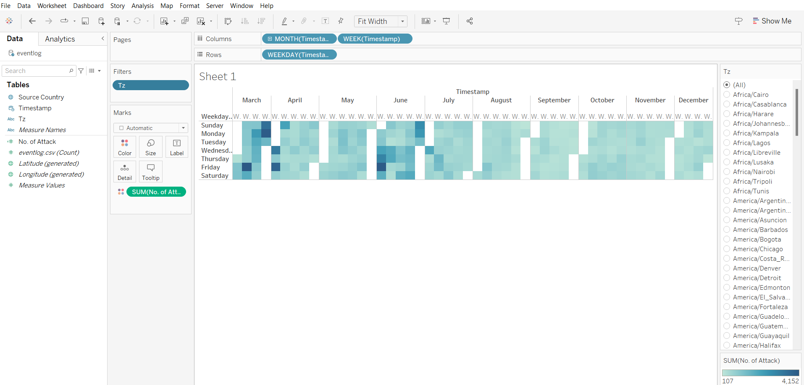